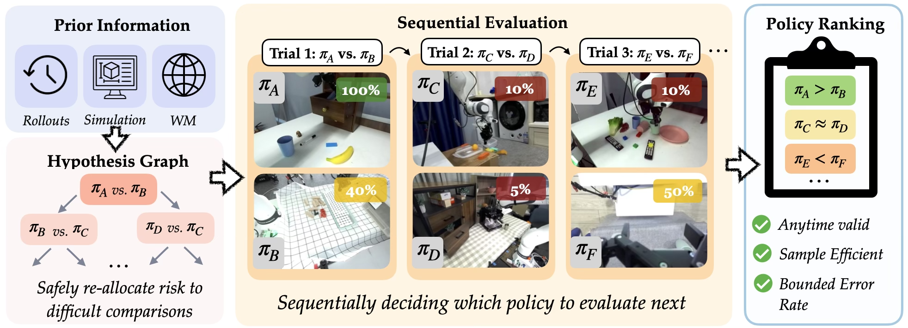
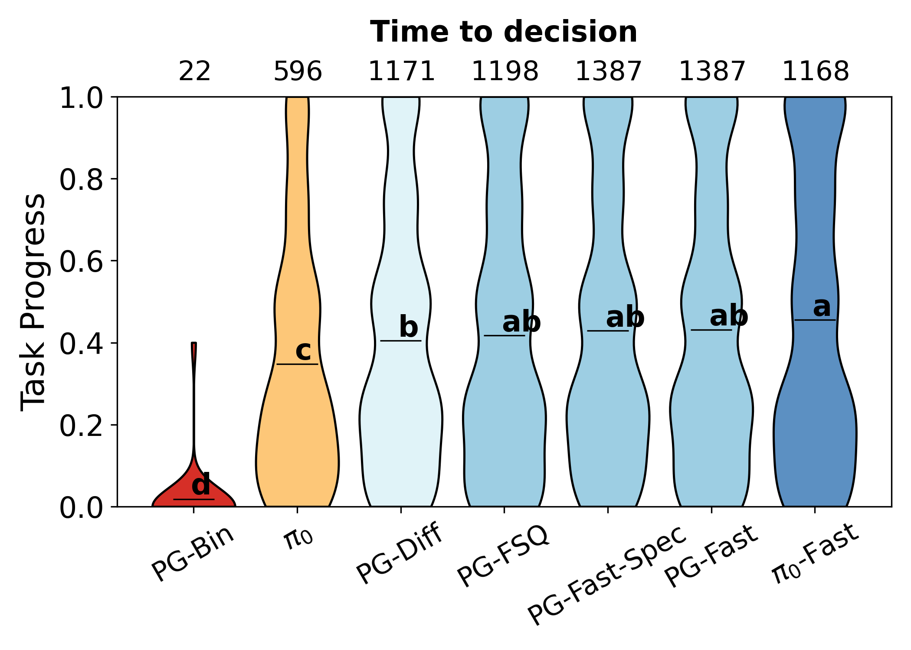
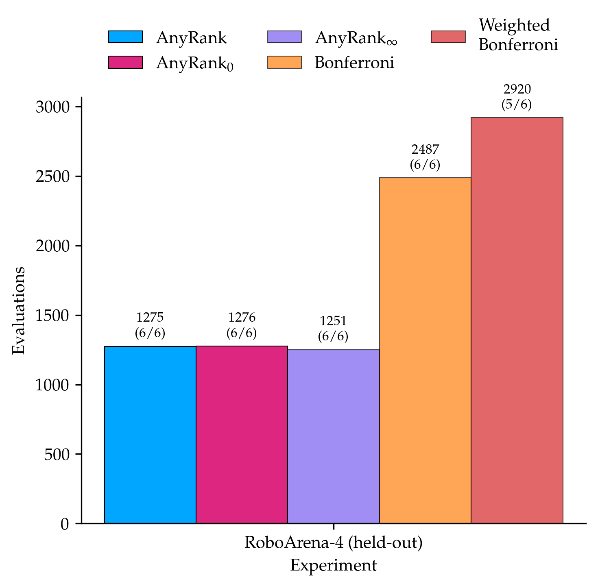

Due to the high cost of hardware experiments, robot policies are predominantly evaluated by comparing their empirical performance on a limited number of hardware trials. However, finite-sample statistical uncertainty can lead to erroneous conclusions, especially when ranking multiple policies using a fixed batch of evaluation data. We propose AnyRank: a sequential method for multi-policy ranking that (i) adaptively allocates trials to hard-to-separate policies, (ii) provides (partial) rankings at any stopping time while bounding the probability of an incorrect ranking, and (iii) optionally exploits prior information to prioritize hardware evaluations more efficiently. This prior information could be informed from expert intuition, a small set of held-out hardware evaluations, or from policy rollouts in a simulator or an action-conditioned video world model. Notably, the prior can be imperfect; while a strong prior can provide efficiency gains on hardware, any inaccuracies in prior policy rankings do not invalidate the statistical assurances of AnyRank. We achieve the aforementioned properties through novel theoretical contributions that combine sequential testing with multiple-hypothesis graphical testing approaches. Experiments in simulation and real-world policy evaluation benchmarks show that AnyRank requires up to 50% fewer hardware evaluations compared to existing statistically rigorous approaches, while guarding against the incorrect rankings produced by heuristic methods used by state-of-the-art benchmarks.
Prior statistically-rigorous methods for ranking policies typically satisfy at most one of these at a time. AnyRank is designed to hold all three simultaneously.
Returns a (partial) ranking at any stopping time with a bounded probability of error — more evaluations can always be collected without the risk of p-hacking.
Actively allocates hardware trials to the policies that are hardest to statistically separate, instead of spending evaluations uniformly.
Optionally exploits priors from simulation, a world model, or expert intuition to save samples — an imperfect prior never invalidates the guarantees.
fewer hardware evaluations than existing statistically rigorous ranking methods, while avoiding the incorrect rankings that heuristic approaches used by state-of-the-art benchmarks can produce.
AnyRank is evaluated on real-world policy evaluation benchmarks, including RoboArena and the TRI-LBM dataset. It consistently recovers rankings that are statistically sound and self-consistent across stopping times, while existing Bradley–Terry and Bonferroni-style baselines either overstate confidence or burn far more hardware trials to reach the same conclusions.


@inproceedings{badithela2026anyrank, title = {AnyRank: Reliable Anytime Policy Ranking via Sequential Testing}, author = {Badithela, Apurva and Snyder, David and Yin, Tenny and Sceats, Jade and Pappas, George and Matni, Nikolai and Itkina, Masha and Nishimura, Haruki and Majumdar, Anirudha}, booktitle = {Conference on Robot Learning (CoRL)}, year = {2026} }